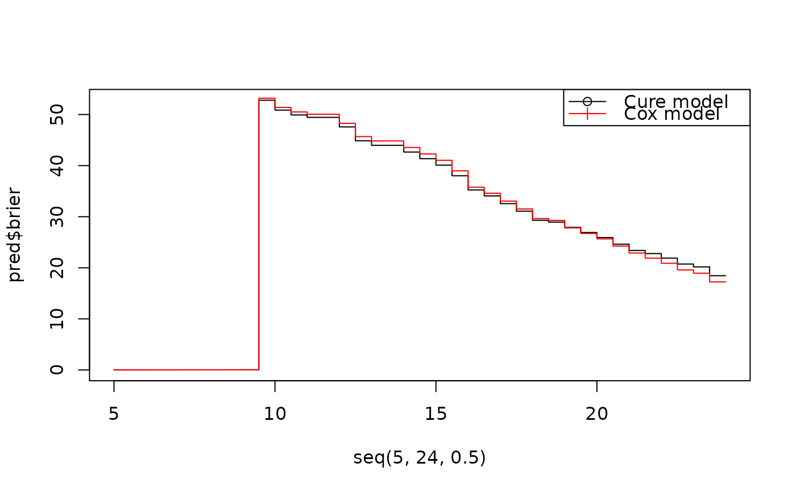

Predicted survival probability by cure model
predict.cureit.RdPredicted survival probability by cure model
Usage
# S3 method for class 'cureit'
predict(
object,
times = NULL,
probs = NULL,
newdata = NULL,
method = "prob",
brier = FALSE,
cox = FALSE,
...
)Arguments
- object
A cureit object.
- times
Numeric vector of times to obtain survival probability estimates at
- probs
Numeric vector of quantiles to obtain estimates at
- newdata
A
base::data.frame()ortibble::tibble()containing all the original predictors used to create object. Defaults toNULL.- method
Output format of predicted values: "lp" (linear predictor) or "prob" (predicted probabilities).
- brier
Boolean indicator of calculating the Brier scores at specified
times.- cox
Boolean indicator of fitting the Cox model for the training data and calculating the Brier scores at specified
timesfornewdata.- ...
passed to methods
See also
Other cureit() functions:
Brier_inference_bootstrap(),
broom_methods_cureit,
cureit(),
nomogram()
Examples
p <- cureit(surv_formula = Surv(ttdeath, death) ~ age,
cure_formula = ~ age,
data = trial)
#> Warning: 0 of 100 did not converge.
pred <- predict(p, times = seq(5,24,0.5),
newdata = trial[complete.cases(trial), ], brier=TRUE,cox=TRUE)
plot(seq(5,24,0.5),pred$brier,type="S",pch=1)
lines(seq(5,24,0.5),pred$brier_cox,type="S",col="red",pch=3)
legend("topright",c("Cure model","Cox model"),
col=c("black","red"),lty=1,pch=c(1,3))
